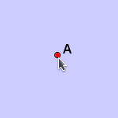
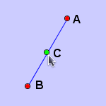
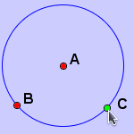
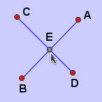

Add a Point
Click the left mouse and a point will be generated. The generated point is usually a free point, however, if click the mouse over an element:
- Over a line. The point will be added to the line. The point is semi-free and the default color is green.
- Over a circle. The point will be added to the circle. The point is semi-free and the default color is green.
- Over two elements (line or circle). The point will be added as the intersection of two elements. However, if the intersected point is already exists, no additional point will be added. The point is a fix point and the color is gray. This is the same as taking intersection of two elements.
Â
 Free Point |
 Point on a line |
 Point on a circle. |
 Point on two elements |
JGEX Help